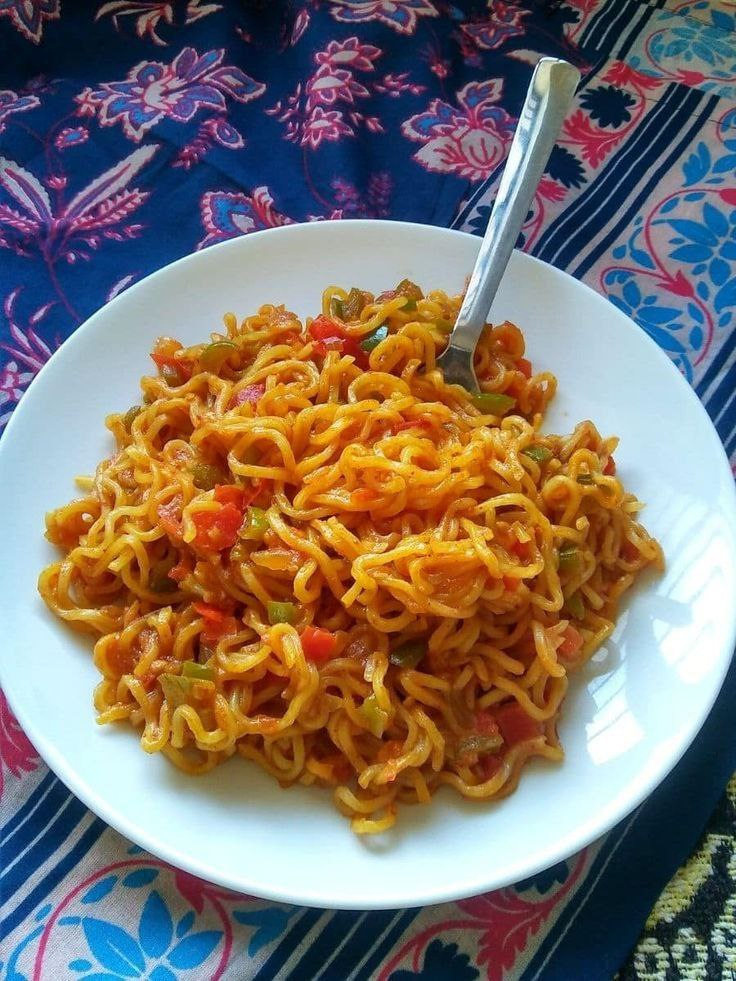

Maggi Noodles

Ingredients
- 1 packet Maggi noodles
- 1 and 1/2 cups water
- 1 tablespoon oil
- 1 small onion, finely chopped
- 1 small green chili, chopped
- 1/4 teaspoon turmeric powder
- Maggi taste maker (included with the packet)
Instructions
- Heat oil in a pan and sauté the chopped onion and green chili until soft.
- Add turmeric powder and mix well.
- Pour 1 and 1/2 cups of water into the pan and bring it to a boil.
- Add Maggi noodles and the taste maker.
- Cook on medium heat for 2-3 minutes, stirring occasionally.
- Once the water is absorbed and the noodles are soft, turn off the heat.
- Serve hot and enjoy your quick meal.
Back to Recipes